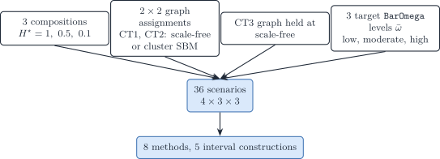
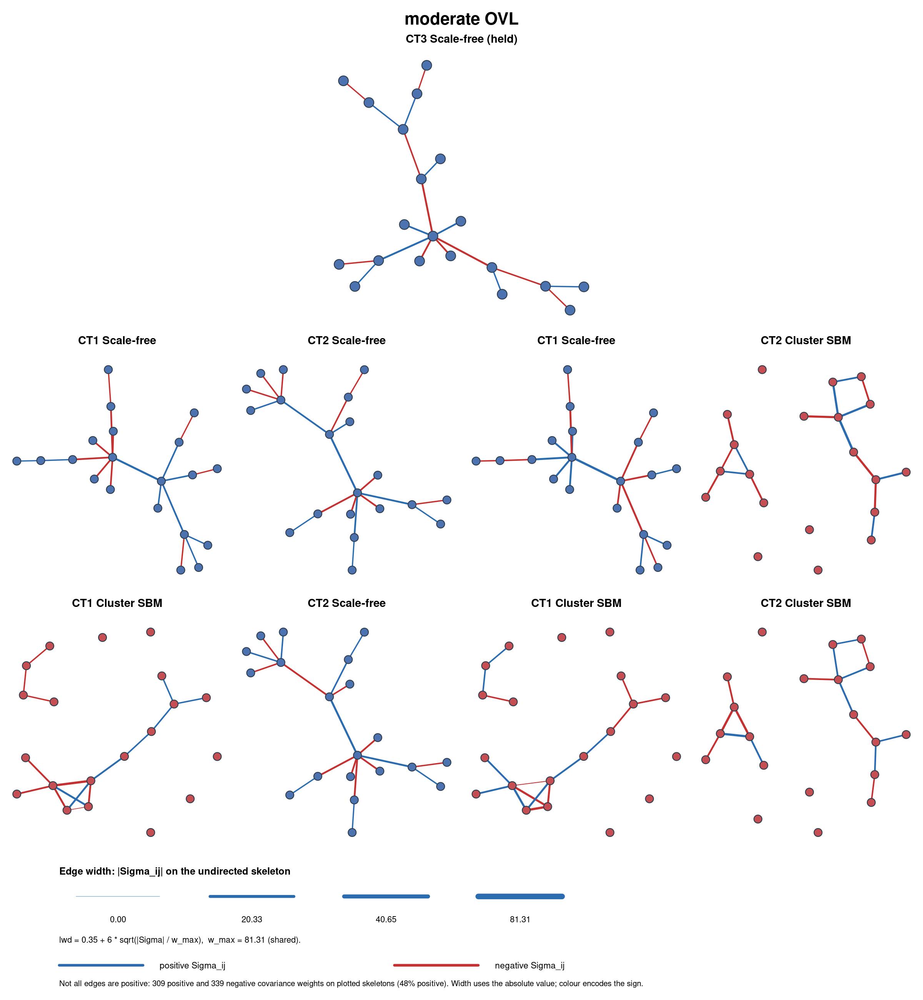

2.2 Covariance-driven scenario (G = 20, J = 3)
Full script: scripts/fig03_variance_covariance_driven.R
2026-10-28
Source:vignettes/fig03-covariance-driven.qmd
The bivariate toy confirms the theoretical benefit of covariance modelling in a transparent setting but cannot demonstrate realistic gene-regulatory network (GRN) topology. This scenario uses G = 20 genes and J = 3 cell types in which types 1 and 2 are mean-collinear (\cos(\boldsymbol{\mu}_{\cdot 1},\boldsymbol{\mu}_{\cdot 2})=0.9): the network topology encoded in \boldsymbol{\Sigma}_j is the remaining discriminative signal. Construction, ADEMP benchmark, and the static network figure live in a single script, scripts/fig03_variance_covariance_driven.R (seed 20260807).

Figure 1: Covariance-driven factorial: one fixed Gram (cosines 0.9 / 0.1), a 2-by-2 graph assignment on the mean-collinear types (scale-free versus cluster SBM; type 3 held at scale-free), three target MixSim average overlaps, three Shannon compositions (4 x 3 x 3 = 36 scenarios), analysed by eight methods.
---
config:
layout: elk
theme: sandstone
---
flowchart TB
ROOT["Covariance-driven G=20, J=3"]
ROOT --> SfSf["CT1 SF, CT2 SF"]
ROOT --> SfSb["CT1 SF, CT2 SBM"]
ROOT --> SbSf["CT1 SBM, CT2 SF"]
ROOT --> SbSb["CT1 SBM, CT2 SBM"]
SfSf --> SfSfLo["Low overlap"]
SfSf --> SfSfMo["Moderate overlap"]
SfSf --> SfSfHi["High overlap"]
SfSb --> SfSbLo["Low overlap"]
SfSb --> SfSbMo["Moderate overlap"]
SfSb --> SfSbHi["High overlap"]
SbSf --> SbSfLo["Low overlap"]
SbSf --> SbSfMo["Moderate overlap"]
SbSf --> SbSfHi["High overlap"]
SbSb --> SbSbLo["Low overlap"]
SbSb --> SbSbMo["Moderate overlap"]
SbSb --> SbSbHi["High overlap"]--- config: layout: elk theme: sandstone --- flowchart TB ROOT["Covariance-driven G=20, J=3"] ROOT --> SfSf["CT1 SF, CT2 SF"] ROOT --> SfSb["CT1 SF, CT2 SBM"] ROOT --> SbSf["CT1 SBM, CT2 SF"] ROOT --> SbSb["CT1 SBM, CT2 SBM"] SfSf --> SfSfLo["Low overlap"] SfSf --> SfSfMo["Moderate overlap"] SfSf --> SfSfHi["High overlap"] SfSb --> SfSbLo["Low overlap"] SfSb --> SfSbMo["Moderate overlap"] SfSb --> SfSbHi["High overlap"] SbSf --> SbSfLo["Low overlap"] SbSf --> SbSfMo["Moderate overlap"] SbSf --> SbSfHi["High overlap"] SbSb --> SbSbLo["Low overlap"] SbSb --> SbSbMo["Moderate overlap"] SbSb --> SbSbHi["High overlap"]
Generative model
One fixed mean signature \boldsymbol{\mu}\in\mathbb{R}^{G\times J} is built with generate_mean_signature_matrix() and an explicit Gram target_gram (mean signature construction). There is no marker block and no null (equal_all) block: uninformative genes would be removed before deconvolution.
R = \begin{pmatrix} 1 & 0.9 & 0.1 \\ 0.9 & 1 & 0.1 \\ 0.1 & 0.1 & 1 \end{pmatrix}, \qquad \boldsymbol{\mu} = s\mathbf{Q}R^{1/2}, \quad s=10. \tag{1}
Because \mathbf{Q}^{\mathsf{T}}\mathbf{Q}=\mathbf{I}_J, the pairwise cosines of the columns of \boldsymbol{\mu} equal R exactly (up to rounding). Euclidean gaps follow \lVert\boldsymbol{\mu}_{\cdot j}-\boldsymbol{\mu}_{\cdot k}\rVert
=s\sqrt{2(1-R_{jk})}. The call uses nonnegative = TRUE (disjoint gene-block frame) so that \boldsymbol{\mu}\ge 0, as required by deconvolute_ratios().
target_gram, mean_scale =10).
| pair | cosine | Euclidean |
|---|---|---|
| celltype_1 vs celltype_2 | 0.9 | 10\sqrt{0.2}\approx 4.472 |
| celltype_1 vs celltype_3 | 0.1 | 10\sqrt{1.8}\approx 13.416 |
| celltype_2 vs celltype_3 | 0.1 | 10\sqrt{1.8}\approx 13.416 |
Each of the mean-collinear types (CT1, CT2) independently draws an undirected skeleton from one of two generators, then completes a signed precision with build_normalised_precision() (GGM networks; topology families in the topology table):
-
Scale-free (
graph_model = "scale_free"): Barabási–Albert preferential attachment (power = 1,edges_per_node = 1). -
Cluster / stochastic block model (
graph_model = "stochastic_block_model"): three blocks with probabilities (0.5,0.25,0.25), p_{\mathrm{within}}=0.25, p_{\mathrm{between}}=0.01.
Erdős–Rényi is not used. Type 3, already separated by the Gram (R_{13}=R_{23}=0.1), is held at scale-free, so the topology factorial is 2^{2}=4 assignments on CT1 and CT2. Those generator names and parameter lists are stored on every row of the config element of output/fig03/fig03_benchmark.rds as graph_ct1 / graph_ct2 / graph_ct3 and the list-column graph_generators; the true moments of each scenario are in its theta_true element.
The spectral cushion u used at completion is now a fixed engineering constant (PRECISION_SHIFT_BASE = 0.2) so that each graph has one SPD precision. The experimental knob is a global covariance scale s: \boldsymbol{\Sigma}_j\mapsto s\boldsymbol{\Sigma}_j keeps every structural zero of \boldsymbol{\Omega}_j because \boldsymbol{\Omega}_j(s)=\boldsymbol{\Omega}_j/s. scale_covariances_to_overlap() searches s so that MixSim BarOmega matches a target in \{0.02,0.08,0.20\} (low / moderate / high), using Sobol Monte Carlo for G=20 (overlap note). This is the graph-constrained analogue of MixSim / FSDA average-overlap simulation (CRAN MixSim; (Melnykov et al. 2012; Riani et al. 2015)): we do not call MixSim() as a generator, because it cannot take a precision support as input.
Larger s also raises the covariance-information fraction f_{\mathrm{cov}} (mean Fisher scales as 1/s; the covariance block is scale-invariant). See the tangent-Fisher callout.
| Factor | Levels |
|---|---|
| Graph model (CT1, CT2) | scale-free; cluster SBM |
| Graph model (CT3) | scale-free (fixed) |
Target BarOmega
|
low (0.02); moderate (0.08); high (0.20) |
| Topology assignments | 2^{2}=\mathbf{4} |
| Covariance draws | 4\times 3=\mathbf{12} |
describe_simulation_scenario() records the realised BarOmega, f_{\mathrm{cov}}, \kappa\{\boldsymbol{\Sigma}(\boldsymbol{p})\}, and pairwise AIRM distance of the \boldsymbol{\Sigma}_j on every row. The overlap target is matched at the balanced composition; unbalanced \boldsymbol{p} change MixSim’s MAP weights, so realised BarOmega is higher there. AIRM is invariant to the global scale s (it scores topology / shape). f_{\mathrm{cov}} rises with s.

Two generators were considered but not adopted:
- Toeplitz covariances: encode only local (banded) dependencies; cannot model cell-type-specific sparse precision.
-
MixSim()as a mixture generator: draws unconstrained means and covariances for a target average overlap; no graph-constrained precision input. DeCovarT keeps the graphs and matchesBarOmegaby scaling \boldsymbol{\Sigma}_j instead.
Inference
Compositions are one-dominant vectors from composition_from_entropy() targeting normalised Shannon entropy H^{\star}\in\{1,0.5,0.1\} (balanced; moderately unbalanced; highly unbalanced). All DeCovarT solvers start at the barycentre (initial_p = "barycentre"). Other initialisation strategies are reserved for separate scenarios.
| Factor | Levels |
|---|---|
| Composition \boldsymbol{p} | H^{\star}=1; H^{\star}=0.5; H^{\star}=0.1 |
| Total scenarios | 4\times 3\times 3=\mathbf{36} |
The run size is read from environment variables, so the dry run and the production run share one script:
scripts/fig03_variance_covariance_driven.R.
| Variable | Meaning | Default |
|---|---|---|
DECOVART_N_REPLICATES |
Monte Carlo bulks per scenario, N | 100 |
DECOVART_N_BOOT |
parametric-bootstrap refits per bulk, B | 200 |
DECOVART_N_REFERENCE |
individuals of the reference panel, R | N |
DECOVART_CORES |
workers of the per-sample loop | 1 |
DECOVART_POSTPROCESS_ONLY |
1 redraws the figures from the saved benchmark |
0 |
Parallel workers load the installed DeCovarT, so run devtools::install() before setting DECOVART_CORES above 1.
Methods
Every method is scored on the same simulated bulks. Feature selection is switched off everywhere: all G=20 genes enter every fit.
| Method | Function or code | Input | Intervals |
|---|---|---|---|
lsei (DeconRNASeq) |
deconvolute_ratios_deconrnaseq() |
true means | none |
| NNLS | deconvolute_ratios_nnls() |
true means | none |
| RLM (robust linear model) | deconvolute_ratios_rlm() |
true means | none |
| CIBERSORT (\nu-SVR) | deconvolute_ratios_cibersort() |
true means | none |
| Newton–Raphson | deconvolute_ratios_Newton_Raphson() |
true moments | Wald, ILR, profile, bootstrap, oracle |
| L-BFGS-B | deconvolute_ratios_L_BFGS_B() |
true moments | Wald, ILR, profile, bootstrap |
| Firth | fit_firth_decovart() |
true moments | Wald, ILR |
| MEAD |
MEAD::MEAD() (GitHub, commit d66fa10) |
reference panel, cohort of N bulks | native sandwich interval |
| RNA-Sieve |
rnasieve 0.1.4 (Python) |
reference panel, cohort of N bulks | released, Fisher and Godambe (see below) |
| ReDeconv |
redeconv 1.2.1 (Python) |
true means and standard deviations | none |
-
lseiand NNLS. NNLS followed by renormalisation is least squares on the simplex with a free scale (\boldsymbol\beta=c\boldsymbol p, c=\mathbf 1^{\top}\boldsymbol\beta);lseifixes c=1. They agree only when \hat c=1. In population scenarios the true scale is 1, solseiuses information NNLS discards; both are run, to show the difference. On 500 bulks of a design like this one with \boldsymbol p=(0.84,0.08,0.08), the largest coordinate difference between the two has median 0.03, 95th percentile 0.11 and maximum 0.19. - L-BFGS-B runs on the closure chart \boldsymbol p=\boldsymbol w/\mathbf 1^{\top}\boldsymbol w with the box \boldsymbol w\ge 0 (closure chart): it maximises the convolution likelihood itself, reaches exact zeros, and its box KKT points are the simplex KKT points.
- Firth maximises the Jeffreys-penalised likelihood (Firth 1993); its estimate is the same for both optimisers, so it appears once.
-
Second-generation methods run from their authors’ code, with gene selection and preprocessing filters off and the other defaults kept (
scripts/benchmark_metrics/second_generation_methods.R; the Python ones through auvproject inscripts/benchmark_metrics/python/, exchanging CSV files with R). MEAD and RNA-Sieve read a reference panel of R purified profiles per type drawn independently of the bulks (simulate_reference_replicates(), its own seed), and are fitted on the cohort of the N bulks of a scenario, whereas DeCovarT fits one bulk at a time.- MEAD rescales every reference profile to a unit total, so its proportions are transcript fractions; its intervals are scored against both the cell and the transcript fractions.
- The released interval code of RNA-Sieve returns [0,1] whenever its averaged Hessian has a condition number above 10^{6} (
stats.py, lines 224 and 234 of version 0.1.4): it then computes \boldsymbol H\boldsymbol B\boldsymbol H^{\top} instead of \boldsymbol H^{-1}\boldsymbol B\boldsymbol H^{-\top} on a gene subsample. The runner also returns the two intervals of the paper, recomputed on all genes with the package’s own per-gene scores and averaged Hessian: Fisher (\boldsymbol B^{-1}/G, the empirical Fisher information) and Godambe (\boldsymbol H^{-1}\boldsymbol B\boldsymbol H^{-\top}/G), with \alpha_K=1-\sum_{k<K}\alpha_k. In the latest dry run the faulty branch never fired, so the released and Godambe intervals coincide; RNA-Sieve’s solver converged in all 36 scenarios of that run, but failed in one to three of them in earlier draws (recorded as a numerical failure, a grey tile in the heatmaps). - DECALS has no public implementation and is not run; its point estimate, constrained least squares solved as a quadratic programme, is the
lseibaseline.
Interval constructions
Coverage is reported with a Wilson Monte Carlo interval (Morris et al. 2019); the interval table also gives the mean and median width and the share of intervals leaving [0,1].
# Dry run (about two minutes):
# DECOVART_N_REPLICATES=5 DECOVART_N_BOOT=5 \
# Rscript scripts/fig03_variance_covariance_driven.R
benchmark <- readRDS("output/fig03/fig03_benchmark.rds")
names(benchmark)
#> meta config theta_true descriptors supplementary regression
#> monte_carlo optimisation intervals data
dplyr::filter(benchmark$intervals, is_composition) |>
dplyr::select(ID, algorithm, ci_method, parameter, coverage, mean_width)Visualisations
Every figure is redrawn from two files in output/fig03/: fig03_benchmark.rds (run settings, design, true parameters and every metric table) and fig03_plot_data.rds, a list keyed by figure file stem that holds the data handed to each plot function.
| Output | Description |
|---|---|
density_visualisations/mean_signature.pdf |
Unscaled \boldsymbol{\mu} heatmap |
density_visualisations/network_topologies.pdf |
Graph skeletons, one page per overlap target; edges coloured by \Sigma_{ij}, nodes by SBM block with a thin black outline, scale-free hubs ringed |
density_visualisations/scenario_metrics.pdf |
Scenario descriptors as shapes, one geometry and palette per column group, each column min–max scaled; the conditioning of the mean signature, shared by the scenarios, is in the caption |
density_visualisations/scenario_metrics_table.html, .pdf
|
The same descriptors as numbers (reactable, tinytable); the PDF marks the easiest value of each column in green and the hardest in red, and shades three columns (entropy, mean overlap, condition number) |
density_visualisations/latent_projections.pdf |
PCA of the pooled purified profiles, with a scree inset (share of the variance of the first ten components), and supervised MclustDR plane |
density_visualisations/pairwise_network_aware_distances.pdf |
Pairwise discrepancy of the purified laws |
density_visualisations/loglik_surface_p.pdf |
Log-likelihood of one bulk on the balance plane 1\mid2, \{1,2\}\mid3 |
density_visualisations/loglik_expected_surface_p.pdf |
Expected log-likelihood; red point = Monte Carlo mean of \hat{\boldsymbol p} |
density_visualisations/loglik_rgl.pdf |
3D relative likelihood (rgl) |
performance_visualisations/heatmap_rmse.pdf, heatmap_aitchison.pdf
|
RMSE and Aitchison tiles; grey = no finite estimate (solver failure) |
performance_visualisations/ci_width_forest.pdf |
Mean interval, coverage [Wilson interval] and width, one page per scenario and cell type; RNA-Sieve released, Fisher and Godambe rows |
performance_visualisations/p_hat_monte_carlo_raincloud.pdf |
Monte Carlo law of \hat{\boldsymbol{p}} |
performance_visualisations/p_hat_monte_carlo_quantile_dots.pdf |
The same law as quantile dots |
performance_visualisations/kkt_residual_raincloud.pdf |
Projected-score KKT residual |
performance_visualisations/convergence_theoretical_vs_numerical_failures.pdf |
Theoretical success, numerical failure, theoretical failure |
performance_visualisations/wald_normality_qq.pdf |
Whitened ILR estimate against N(0,1) |
performance_visualisations/wald_mahalanobis_chi2_qq.pdf |
D^{2} against \chi^{2}_{J-1}, \log_{10} axes, coloured by convergence |
performance_visualisations/estimate_agreement_hellinger_ward.pdf |
Mean Hellinger distance between paired estimates, Ward clustering; dashed line at the mean over method pairs |
performance_visualisations/rmse_colour_aitchison_size_dots.pdf |
Colour = RMSE, size = Aitchison distance |
performance_visualisations/runtime.pdf, memory.pdf
|
\log_{10} seconds and \log_{10} MiB |
Redraw every book without refitting with DECOVART_POSTPROCESS_ONLY=1 Rscript scripts/fig03_variance_covariance_driven.R.
Two-dimensional projections of a Gaussian convolution
With G=20 the purified Gaussians and the bulk convolution are no longer drawable in the gene plane. latent_projections.pdf maps each selected scenario (lowest and highest overlap, balanced and highly unbalanced composition, four graph assignments) to two planes.
Warning 1
A J-type bulk draw is Y\mid\boldsymbol{p}\sim\mathcal{N}\bigl(\boldsymbol{\mu}(\boldsymbol{p}),\boldsymbol{\Sigma}(\boldsymbol{p})\bigr) with \boldsymbol{\mu}(\boldsymbol{p})=\sum_j p_j\boldsymbol{\mu}_{\cdot j} and \boldsymbol{\Sigma}(\boldsymbol{p})=\sum_j p_j^2\boldsymbol{\Sigma}_j. Every observation is a weighted sum of all types (
simulate_bulk_mixture()). A finite mixture instead draws a latent label and then one component, f(\boldsymbol{y})=\sum_k\pi_k\,\phi(\boldsymbol{y};\boldsymbol{\mu}_k,\boldsymbol{\Sigma}_k), with mixing weights \boldsymbol{p} (not \boldsymbol{p}^2).MclustDRtargets that mixture. Its \pi_k are not cell-type proportions, and its component densities are not the convolution law used for deconvolution.
Principal components of the purified profiles
Principal components of the pooled purified draws, coloured by type, show what the means alone separate: types 1 and 2, whose means have cosine 0.9, overlap on the first two components, while type 3 stands apart.
Supervised MclustDR plane
The second panel fits mclust::MclustDA(..., modelType = "EDDA") to the labelled purified draws, then mclust::MclustDR() (Fraley et al. 2026; Scrucca 2010, 2015) (MclustDR reference). Its kernel combines the separation of the class means with the differences of the class covariances, which is the signal DeCovarT exploits. Its generalised eigenvalues measure class-relevant variability, not ordinary PCA variance. The panels with independent factor analyses (Thomson scores) and mixtures of common factor analysers were dropped: they described each type, or an unlabelled mixture, but not the contrast between types.
Solver runtime and memory
runtime.pdf and memory.pdf use the same composition order as the other performance books (balanced, then moderately unbalanced, then highly unbalanced): one page per (). Each page facets the three MixSim overlap levels, puts CT1/CT2 topology on the x-axis (SF/SF, SF/SBM, SBM/SF, SBM/SBM), and maps solver to colour, fill, and grouping. The geometry is a vertical ggdist half-eye (raincloud) of the per-sample optimisation$elapsed_sec or memory_bytes (converted to MiB), with a left-side geom_rug() of the raw Monte Carlo draws and a log10 y-axis.
Likelihood geometry and solver behaviour
Note
The numbers in this section come from the archived run of
output/archives/fig03/(N=50, Wald intervals only), which still included Marquardt–Levenberg and the earlier L-BFGS-B that renormalised a box-constrained fit. They will be replaced by those of the production run; the mechanisms they illustrate do not depend on the solver list.
Cell types 1 and 2 share cosine 0.9, so the mean map \boldsymbol{\mu}\boldsymbol{p} is close to singular in the (p_1,p_2) plane: type 3 is the only well-separated mean. MixSim \bar\omega then sets how much of the remaining signal lives in \{\boldsymbol{\Sigma}_j\}. The pack in output/fig03/mle_explanation/ (descriptors, ILR slices of \ell at \boldsymbol{y}=\boldsymbol{\mu}\boldsymbol{p}^{\star}, expected-Fisher SEs, Newton/Marquardt forests on balanced compositions, and a quantile-sampled raincloud across all H^{\star}) is the numerical reading of that geometry. As in the bivariate toy, three layers must be kept apart: the convolution \ell, the surrogate each solver optimises, and the chart / KKT / stopping rule.
Surrogates versus the convolution
lsei (limSolve) is again a convex QP for \|\boldsymbol{y}-\boldsymbol{\mu}\boldsymbol{p}\|_2^2 on the simplex (Soetaert et al. 2026; Gong and Szustakowski 2013; Dessole et al. 2023; Boyd et al. 2004). With two nearly collinear signature columns the QP is under-determined in the (p_1,p_2) direction; the equality \sum p_j=1 plus bounds then put mass on a face. CIBERSORT replaces squares by a \nu-SVR hinge (Newman et al. 2015). The dual is a convex quadratic programme solved by sequential working-set methods (Fan et al. 2005). The wrapper does not constrain coefficients to the simplex during the fit: negatives are clipped to zero and the remainder is renormalised. Clipping is a Euclidean projection onto the positive orthant, not a constrained MLE, so a support vector that overshoots becomes a vertex of \Delta^{2}. Neither method sees p_j^2\boldsymbol{\Sigma}_j.
DeCovarT solvers maximise the Gaussian convolution. Newton-Raphson and Marquardt-Levenberg do so in ILR, with a full Hessian versus Marquardt damping plus RDM (Marquardt 1963; Commenges et al. 2006; Philipps et al. 2021, 2023). L-BFGS-B uses a limited-memory inverse Hessian on the closure chart \boldsymbol p=\boldsymbol w/\mathbf 1^{\top}\boldsymbol w, \boldsymbol w\ge0 (Byrd et al. 1995; Zhu et al. 1997). The same caveats as in the bivariate interpretation apply: Boyd’s local-quadratic Newton rate needs a locally strongly concave \ell; RDM stops when further ILR steps are smaller than statistical error; the archived box-constrained BFGS, which renormalised a free-scale fit, could sit on a face that is not a stationary point of \ell (the closure chart now used cannot). All of this is still N=1 per bulk (finite-sample MLE).
Balanced compositions (forest + Fisher)
The Newton/Marquardt forest in the pack is restricted to H^{\star}=1 (p^{\star}=(1/3,1/3,1/3)). On that slice the two second-order solvers are interchangeable. At low overlap (V1, both graphs scale-free) RMSE for p_1 is 0.113, bias 0.012, empirical SD 0.113, coverage 0.99. At high overlap (V7) RMSE rises only to 0.124 and coverage stays 0.99. Median RMSE for p_1 across the four graph assignments is 0.122 (low \bar\omega), 0.134 (moderate), 0.147 (high); type 3, whose mean is not collinear, stays easier at low overlap (median RMSE 0.064) and catches up as overlap grows (0.130). Expected-Fisher ILR standard errors in theoretical_wald_se.csv tell the same story: \mathrm{SE}_{\rho_1} goes from 0.63 (V1) to 0.97 (V7), and the condition number of the ILR information drops from 6.8 to 1.7 — not because the problem becomes better posed, but because both eigenvalues shrink and the ellipsoid becomes a large, round disk. Graph assignment (scale-free versus cluster SBM) moves those SEs by a smaller amount than \bar\omega does. Topology is visible; average overlap is the dominant knob, matching the design claim, for balanced p^{\star} and for second-order convolution MLEs.
Boundary pile-up (raincloud, all H^{\star})
The sampled raincloud (raincloud_sampled.csv) includes moderately and highly unbalanced Shannon targets. Among non-missing point estimates, 76\% of CIBERSORT values lie at 0 or 1. At the scenario-wise median (sample_role = q50), type 3 is exactly zero in 35 of 36 scenarios (mean \hat p_3=0.0008). That is the clip-and-renormalise step, not a convolution mode on a face. lsei sits on a bound in 42\% of sampled cells overall and in 58\% of highly unbalanced cells; LBFGS in 26\% and 36\%; Marquardt in 10\% and 17\%; Newton in 4\% and 12\%. On balanced raincloud rows Newton and Marquardt never hit \{0,1\}; LSEI still does (21\%). Mean-only and SVR methods convert a collinear mean map into a hard boundary estimate; ILR convolution methods convert it into a soft interior mode, until p^{\star} itself is a rare-type vertex.
Median absolute error of the q_{50} p_1 fit across scenarios is 0.048 (Newton), 0.100 (lsei), 0.114 (LBFGS), 0.142 (Marquardt), 0.159 (CIBERSORT). The Marquardt figure is not a contradiction of the balanced forest: on the highly unbalanced scenario V3 (p^{\star}\approx(0.980,0.010,0.010)) the q_{50} estimates are 0.92 (Newton), 0.93 (lsei), 1.00 (CIBERSORT), 0.82 (LBFGS), and 0.78 (Marquardt). LSEI is closer to the vertex because the QP wants a vertex; Marquardt is pulled toward the barycentre because RDM refuses a long ILR walk, the same mechanism as B811 in the bivariate pack. Covariance information therefore helps only if the solver actually follows the convolution ridge to the rare-type coordinate. A mean-only vertex can beat a damped interior MLE on raw p_1 error when the truth is already a vertex; it will still report \hat p_3=0 and cannot support a chi-bar-square test that the type is absent (boundary inference).
Ridges in the ILR slices
ilr_loglik_profiles.csv slices \ell(\rho_1,\rho_2) at \boldsymbol{y}=\boldsymbol{\mu}\boldsymbol{p}^{\star}. High \bar\omega produces ridges along the type-1/type-2 contrast (the collinear mean direction): many (\rho_1,\rho_2) give almost the same convolution Gaussian. Newton follows the ridge until the Hessian in the remaining well-identified direction (type 3 versus \{1,2\}) stops it. Marquardt stops earlier when RDM sees no inferential gain. L-BFGS-B, stepping in p with only box bounds, can leave the simplex during the line search and land near a face after p/\sum p, which is the raincloud’s 26\% bound rate. None of these paths is the Godambe sandwich or a Firth penalty (Firth 1993); the Firth fit is now benchmarked as its own method (Firth). With N=1, the honest frequentist statement for a rare type is still the restricted LRT / parametric bootstrap of the MLE article, not a Wald ellipse from vcov_ilr_delta().
See also
- Bivariate toy: §2.1
- Moment generator: How to build synthetic scenarios
- Overlap and SPD distances: Distances, overlap, and covariance information
- Feature-selection on this design: Appendix S6
- Identifiability of collinear means: Appendix S1